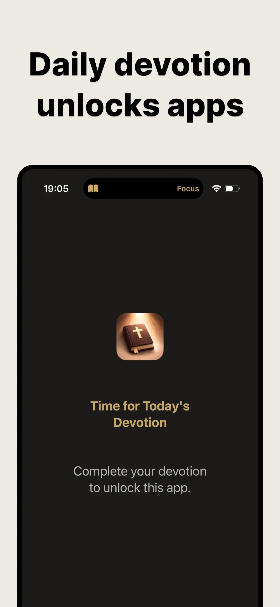

Bible Focus › Guides › Morning Devotion Routine
A Simple Morning Devotion Routine: Give God the First 3 Minutes
Forget the 5am fantasy with the journal spread and the sunrise. Most mornings are a snoozed alarm, a found sock, and a phone already glowing in your hand. A morning devotion routine that works has to fit that morning — which is why this one is three minutes long and starts exactly where your thumb already is.
Why the first minutes matter
Jesus rose early to pray (Mark 1:35); the psalmist sought God at dawn (Psalm 63:1). There's wisdom in the pattern: the first input of the day disproportionately sets its direction. Whoever speaks into your morning first — the news, the group chat, or the Word — gets a vote on your whole day.
"O God, thou art my God; early will I seek thee."Psalm 63:1 (KJV)
The 3-minute routine
- Alarm off — Bible Focus open. Same motion you'd use for the feeds, different destination. Today's verse is already chosen and waiting; zero decisions required.
- READ (1 min). One passage, slowly. Still lying down is allowed. God has heard groggier prayers.
- REFLECT + RESPOND (1 min). What word stayed? Write one honest line — that's your anchor for the day.
- PRAY (1 min). A sentence of thanks, a sentence of asking. Amen.
- Now the day may begin. If you've set it, your blocked apps unlock only now — devotion done, feeds earned. The scroll waits for the Word, never the other way around.

Making it stick through real weeks
- Anchor, don't schedule. Not "7:15am" but "before the first unlock of any other app." Anchors travel with you on weekends and time zones; schedules don't.
- Pre-decide the exception rule. Sick day, red-eye, newborn chaos: the fallback is reading the verse only, ten seconds, done. Keeping the thread matters more than the length.
- No streak math. Bible Focus keeps a quiet calendar, not a scoreboard. Missed yesterday? Today's verse doesn't mention it.
- Evenings count too. If mornings truly aren't yours, the same 3-minute rhythm works at lunch or lights-out. The best routine is the one that happens. (See the full quiet time guide.)
What a month of mornings builds
Thirty mornings × three minutes is an hour and a half — barely one movie. But stack them and you get: thirty passages sat with, thirty honest lines written in your own words, and a morning reflex that reaches for the Word before the world. That's not an app habit. That's a changed default.
Tomorrow's verse is already waiting
3 minutes · Before the feeds · Free on iOS